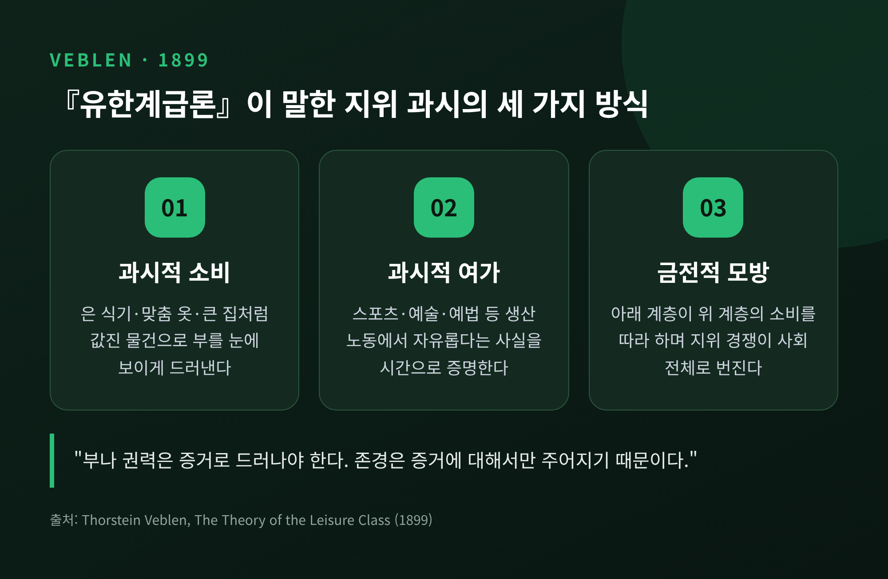
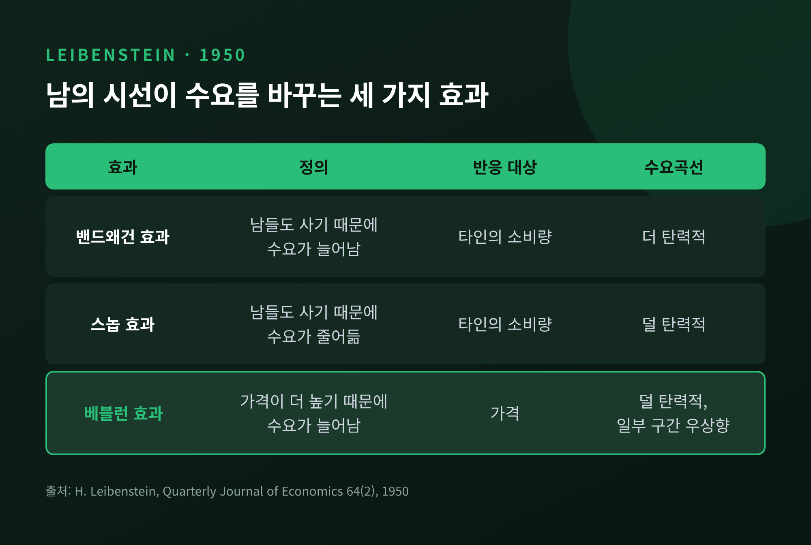
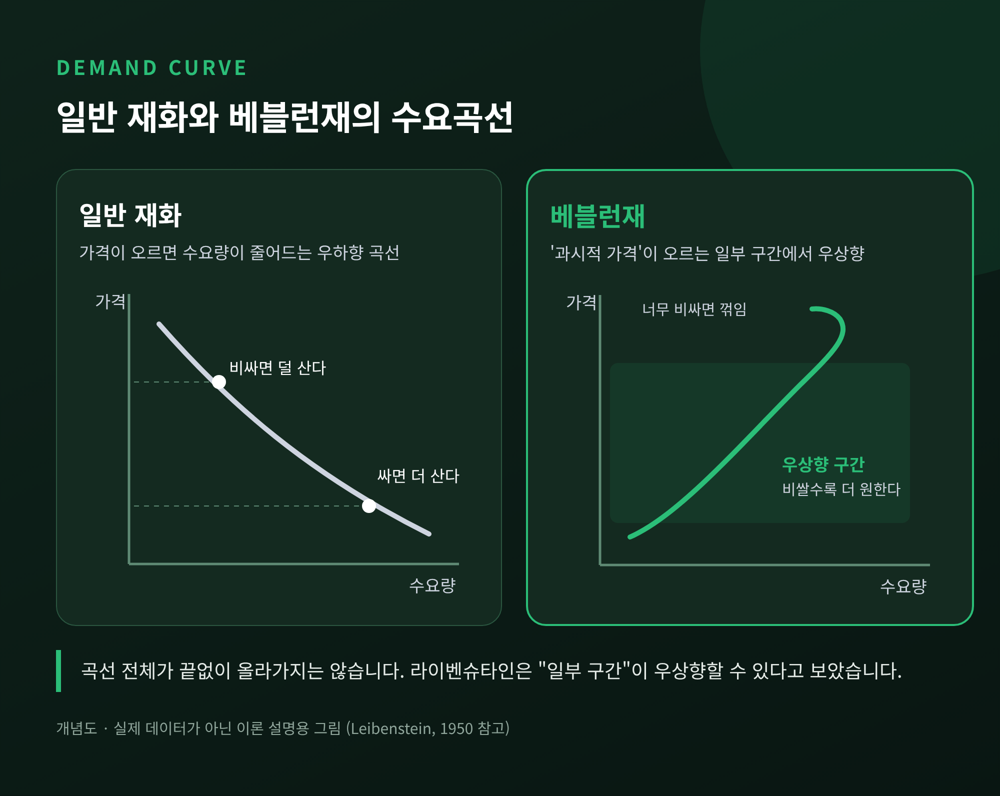
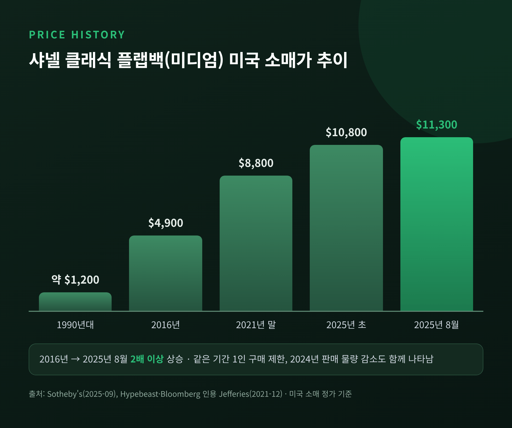
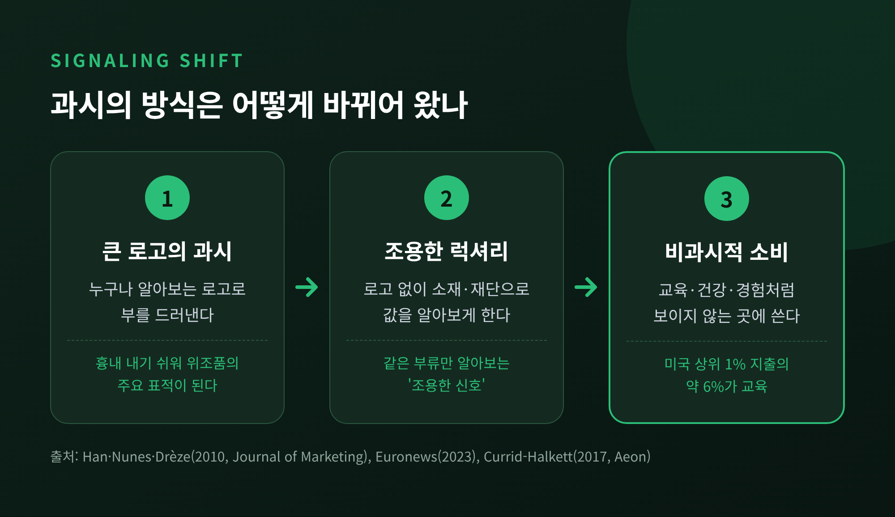

베블런 효과와 과시적 소비 — 명품은 왜 비쌀수록 더 팔릴까

오늘은 가격이 오를수록 오히려 더 잘 팔리는 물건, 이른바 베블런 효과에 대해 이야기해 보려 합니다. 1899년 한 경제학자가 던진 질문에서 출발해, 1950년의 수요 이론과 신호 이론, 그리고 요즘의 명품 가격 인상과 '조용한 럭셔리'까지 차례로 짚어 보겠습니다.
세 줄 요약
- 베블런 효과는 "비싸기 때문에" 수요가 늘어나는 현상입니다. 가격 자체가 지위를 보여주는 신호가 됩니다.
- 가난한 가계가 필수 식품에서 보이는 기펜재와는 원리가 다릅니다. 둘 다 우상향 수요곡선을 만들지만 이유가 정반대입니다.
- 다만 한계가 있습니다. 연속 가격 인상 뒤 명품 고객이 줄었고, 과시의 방식은 '로고'에서 '보이지 않는 소비'로 옮겨 가고 있습니다.
■ 베블런이 본 것 — 과시적 소비와 과시적 여가
소스타인 베블런은 1899년 『유한계급론(The Theory of the Leisure Class)』을 펴냈습니다. 일하지 않아도 되는 상류층, 즉 '유한계급'이 어떻게 자기 지위를 드러내는지 파고든 책입니다.
그가 내린 진단은 간결합니다. 부는 갖고 있는 것만으로는 부족하고, 남의 눈에 보여야 합니다. 책에는 이런 문장이 나옵니다. "부나 권력은 증거로 드러나야 한다. 존경은 증거에 대해서만 주어지기 때문이다."
드러내는 방법은 두 갈래입니다.
- 과시적 소비: 값진 물건을 써서 부를 보여주는 것입니다. 베블런이 든 예는 은 식기, 맞춤 옷, 필요 이상으로 큰 집입니다. 같은 아름다움이라면 값싼 재료보다 귀금속 공예품이 선호된다는 관찰도 덧붙였습니다.
- 과시적 여가: 생산적인 노동에서 벗어나 있다는 사실을 보여주는 것입니다. 스포츠, 예술, 예법 같은 '쓸모없지만 시간이 드는' 활동이 여기에 속합니다. 베블런은 노동을 하지 않는 것이 곧 부의 관습적 증거이자 사회적 지위의 표지라고 썼습니다.
여기서 그치지 않습니다. 아래 계층은 위 계층의 소비를 따라 합니다. 베블런은 이것을 '금전적 경쟁심(pecuniary emulation)'이라 불렀습니다. 그리고 이 경쟁적 모방 성향이 경제적 동기 가운데 "아마도 가장 강하고 끈질긴 것"이라고 보았습니다. 반대로 적정한 양과 질로 소비하지 못하는 것은 "열등함의 표지"가 된다고 했습니다.

■ 라이벤슈타인의 분해 — 밴드왜건, 스놉, 베블런
베블런의 통찰을 수요 이론의 언어로 옮긴 사람은 하비 라이벤슈타인입니다. 1950년 『계간 경제학 저널(QJE)』에 실린 논문에서 그는 남의 시선이 수요에 끼치는 영향을 세 가지로 나눴습니다. '베블런 효과'라는 용어도 이 논문에서 처음 쓰였습니다.
| 효과 | 라이벤슈타인의 정의 | 무엇의 함수인가 | 수요곡선에 미치는 영향 |
|---|---|---|---|
| 밴드왜건 효과 | 남들도 소비하기 때문에 수요가 늘어남 | 타인의 소비량 | 더 탄력적 |
| 스놉 효과 | 남들도 소비하기 때문에 수요가 줄어듦 | 타인의 소비량 | 덜 탄력적 |
| 베블런 효과 | 가격이 더 높기 때문에 수요가 늘어남 | 가격 | 덜 탄력적, 일부 구간은 우상향 가능 |
스놉과 베블런, 두 효과는 비슷해 보입니다. 라이벤슈타인은 둘을 이렇게 갈랐습니다. 스놉은 "타인의 소비"에 반응하고, 베블런은 "가격"에 반응한다는 것입니다.
그가 만든 개념 중 눈여겨볼 것이 하나 더 있습니다. '과시적 가격(conspicuous price)'입니다. 실제로 낸 돈이 아니라 "다른 사람들이 내가 냈다고 생각하는 가격"을 뜻합니다. 과시의 만족은 바로 이 가격에서 나옵니다. 남들이 가격을 알아야 효과가 생긴다는 뜻이기도 합니다.

■ 우상향 수요곡선은 무엇을 뜻할까
경제학 교과서의 수요곡선은 오른쪽 아래로 내려갑니다. 값이 오르면 덜 사고, 내리면 더 삽니다.
과시 욕구가 강하게 작동하는 구간에서는 이 기울기가 뒤집힐 수 있습니다. 값이 오르면 '과시적 가격'이 함께 올라가고, 그만큼 지위 신호로서의 가치도 커지기 때문입니다.
다만 라이벤슈타인의 표현은 신중합니다. 가격에 반응하는 과시 효과가 지배적일 때 수요곡선이 덜 탄력적이 되고, "일부 구간"이 우상향할 수 있다고 했습니다. 곡선 전체가 끝없이 올라간다는 뜻은 아닙니다. 어느 지점을 넘으면 다시 꺾입니다.
가격이 '느낌' 자체를 바꾼다는 실험도 있습니다. 2008년 미국 국립과학원회보(PNAS)에 실린 플라스만 연구팀의 와인 실험입니다. 20명에게 같은 와인을 다른 가격표로 맛보게 했습니다. 90달러짜리를 10달러로, 5달러짜리를 45달러로 표시하는 식입니다. 높은 가격표가 붙자 맛 평가가 올라갔고, 즐거움과 관련된 뇌 영역(내측 안와전두피질)의 활동도 커졌습니다. 가격을 가리고 맛보게 하자 오히려 5달러 와인이 가장 좋은 평가를 받았습니다. 참가자가 직접 돈을 내지 않았다는 한계는 있지만, 가격이 품질 신호로 작동한다는 점은 분명히 보여줍니다.

■ 기펜재와는 무엇이 다를까
가격이 오를 때 수요가 늘어나는 재화가 하나 더 있습니다. 기펜재입니다. 겉모습은 같지만 원리는 전혀 다릅니다.
| 구분 | 베블런재 | 기펜재 |
|---|---|---|
| 대표 소비자 | 지위를 드러내려는 부유층 | 생계가 빠듯한 저소득 가구 |
| 대상 | 사치재·명품 | 주식(主食) 같은 필수재 |
| 원리 | 가격과 선호의 상호작용 — 비싸서 원함 | 소득효과가 대체효과를 압도 |
| 실증 | 순수한 우상향 관측은 드묾 | 젠슨·밀러(2008) 중국 후난성 쌀 |
기펜재의 대표 실증은 로버트 젠슨과 놀런 밀러가 2008년 『미국경제학회지(AER)』에 발표한 연구입니다. 중국 두 성의 극빈 가구에 주식 가격 보조금을 주는 실험을 했습니다. 후난성의 쌀에서 강한 기펜 행동이, 간쑤성의 밀에서는 약한 증거가 나왔습니다.
쌀값이 오르면 가난한 가구는 고기 같은 비싼 음식을 포기합니다. 그 빈자리를 다시 쌀로 채우면서 쌀 소비가 늘어나는 구조입니다. 베블런재가 '보여주기 위한' 우상향이라면, 기펜재는 '버티기 위한' 우상향인 셈입니다.
■ 값비싼 신호 — 왜 비싸야 믿을 수 있을까
베블런의 생각은 뒤에 '신호 이론'으로 이어집니다.
마이클 스펜스는 1973년 직업시장 신호 모형을 내놓았습니다. 지원자는 비용이 드는 교육으로 자기 능력을 알립니다. 노벨위원회는 2001년 그에게 경제학상을 주며 이렇게 설명했습니다. 더 많이 아는 쪽이 비용이 드는 행동으로 정보를 신뢰할 만하게 전달하고, 스펜스는 그런 신호가 언제 작동하는지 보였다는 것입니다.
생물학에도 같은 논리가 있습니다. 아모츠 자하비의 1975년 '핸디캡 원리'입니다. 공작의 화려한 꼬리처럼 비용이 큰 신호는 약한 개체가 흉내 낼 수 없어서 정직한 신호가 됩니다. 이 개념은 베블런의 과시적 소비와 나란히 비교되곤 합니다.
경제학에서 이를 명품에 적용한 연구가 배그웰과 번하임의 1996년 논문입니다. 조건이 맞으면 저가 브랜드는 원가 수준 가격에 팔리고, 품질이 꼭 더 낫지 않은 고급 브랜드는 부를 드러내려는 소비자에게 더 높은 가격에 팔리며 이윤을 남긴다는 결론입니다.
핵심은 하나입니다. 비싸다는 사실 자체가 '아무나 못 산다'는 증거가 됩니다. 값이 싸지면 신호도 약해집니다.
■ 명품의 연속 가격 인상 — 숫자로 본 베블런 효과
이 논리를 가장 잘 보여주는 사례가 샤넬 클래식 플랩백입니다.
미국 소매가 기준으로 미디엄 사이즈는 1990년대 약 1,200달러였습니다. 2016년에는 4,900달러, 2025년 8월에는 11,300달러가 됐습니다. 소더비는 2016년 이후 "두 배 넘게" 올랐다고 정리했습니다. 팬데믹 기간에는 인상 속도가 특히 빨랐습니다. 제프리스 분석에 따르면 2019년 11월부터 2021년 말까지 스몰 사이즈 미국 가격이 60% 올랐습니다.
그사이 수요는 줄지 않았습니다. 2022년 로이터 보도에 따르면 샤넬은 일부 인기 품목에 1인 구매 수량 제한을 둘 정도였습니다. 2021년 매출은 156억 달러로 전년보다 49.6% 늘었습니다.

한국도 비슷합니다. 클래식 미디엄(11.12)은 2025년 6월 1,557만 원에서 1,660만 원으로 올랐습니다. 2026년 1월에는 1,790만 원, 같은 해 7월에는 1,880만 원이 됐습니다. 한국은 원래 명품 수요가 강한 시장입니다. 모건스탠리는 2022년 한국인의 1인당 명품 지출을 약 325달러로 추산했습니다. 미국 280달러, 중국 55달러보다 많은 세계 최고 수준입니다. 같은 보고서에 인용된 맥킨지 조사에서 부의 과시를 '나쁜 취향'으로 본 응답은 한국 22%로, 일본 45%·중국 38%보다 낮았습니다.
그러나 한계도 드러났습니다. 번스타인 추정으로 샤넬은 2020~2023년 가격을 59% 올렸고, 2024년 판매 물량은 7% 줄었습니다. 2024년 매출은 187억 달러로 환율 조정 기준 4.3%(달러 기준 5.3%) 감소했습니다. 로이터는 이를 팬데믹 이후 큰 폭의 가격 인상 뒤 고급 브랜드들이 "수요의 한계"에 부딪힌 결과로 설명했습니다. 샤넬은 2025년 인상 폭을 전체 3% 수준으로 낮췄고, 매출은 2% 늘어난 193억 달러로 회복했습니다.
시장 전체로 보면 경고음이 더 큽니다. 베인앤드컴퍼니는 2024년 개인 명품 시장을 3,630억 유로로 추산했습니다. 전년보다 2% 줄어든 규모입니다. 같은 분석에서 명품 고객은 2022년 약 4억 명에서 2024년 말 약 3억 5,000만 명으로, 5,000만 명가량 이탈했습니다. 소비자의 절반 이상은 명품이 지나치게 비싸다고 답했습니다.
물론 모든 브랜드가 같지는 않습니다. 에르메스는 같은 2024년 매출 152억 유로, 고정환율 기준 15% 성장을 기록했습니다. 비쌀수록 팔리는 힘은 '모든 비싼 것'이 아니라 희소성과 신뢰를 끝까지 지킨 브랜드에만 오래 머무는 것으로 보입니다.
■ 소셜미디어 시대, 과시는 '조용해졌다'
예전에는 커다란 로고가 곧 신호였습니다. 지금은 로고를 지우는 쪽이 오히려 더 비싼 신호가 되기도 합니다.
2023년 전후 유행한 '조용한 럭셔리(quiet luxury)'가 그 예입니다. 로고 없이 소재와 재단으로만 값을 알아보게 하는 옷입니다. 드라마 〈석세션〉과 귀네스 팰트로의 재판 복장이 계기로 꼽힙니다. 유로뉴스에 따르면 '조용한 럭셔리' 구글 검색은 1년 새 614% 늘었습니다.
이 흐름은 연구로도 설명됩니다. 영지 한(Young Jee Han)·조지프 누네스·자비에 드레즈의 2010년 『저널 오브 마케팅』 연구는 소비자를 부와 지위 욕구에 따라 네 집단으로 나눴습니다. 진짜 부유층은 같은 부류만 알아보는 '조용한 신호'를 고르고, 이런 제품에 더 높은 가격이 매겨졌습니다. 반면 위조품은 주로 큰 로고 제품을 베꼈습니다. 큰 로고는 흉내 내기 쉬운 신호라는 뜻입니다.
더 나아가 아예 '보이지 않는 소비'로 옮겨 가는 흐름도 있습니다. 엘리자베스 커리드-할켓은 이를 '비과시적 소비'라 불렀습니다. 미국 소비자지출조사에서 상위 1% 가구는 2007년 이후 물질재 지출을 크게 줄였습니다. 대신 교육이 이들 지출의 약 6%를 차지해, 중간소득 가구(1% 남짓)를 크게 앞질렀습니다.
소셜미디어는 과시를 더 쉽게 만들었지만, 동시에 과시를 더 흔하게 만들었습니다. 누구나 보여줄 수 있게 되자, 보여주지 않는 것이 새로운 구별 짓기가 됐습니다.

■ 소비자에게 주는 시사점
이 원리를 안다고 해서 명품을 사지 말라는 이야기는 아닙니다. 다만 몇 가지는 스스로 물어볼 만합니다.
- 나는 물건을 사는가, 가격표를 사는가. 라이벤슈타인의 표현대로라면 기능적 수요와 비기능적 수요를 나눠 보는 일입니다.
- 가격이 곧 품질이라는 착각. 와인 실험처럼 가격표는 체감 품질까지 바꿉니다. 가린 채로 비교해 보면 판단이 달라질 수 있습니다.
- '재테크 가방'이라는 말은 조심해서 듣기. 가격이 오른 것은 사실이지만, 판매가 줄고 인상 폭이 낮아진 시기도 함께 있었습니다. 이 글은 투자 권유가 아닙니다.
- 신호의 유효기간. 모두가 같은 신호를 쓰면 신호는 약해집니다. 남의 시선을 기준으로 한 소비는 끝없이 갱신해야 합니다.
정리하면 이렇습니다. 베블런 효과는 사람들이 물건만이 아니라 '다른 사람의 시선'까지 함께 산다는 사실을 보여줍니다. 그 시선은 로고에서 소재로, 소재에서 보이지 않는 경험으로 옮겨 가고 있습니다.
"비싼 것은 지위를 증명하지만, 가치를 증명하지는 않습니다."
다음에 가격표 앞에서 망설이게 된다면, 그 망설임의 절반쯤은 남의 눈 때문일지도 모르겠습니다.
참고 자료
- Wikipedia, The Theory of the Leisure Class — https://en.wikipedia.org/wiki/Pecuniary_emulation
- Britannica, Thorstein Veblen: Quotes — https://www.britannica.com/quotes/Thorstein-Veblen
- Macmillan Learning, Veblen (1899) 원문 발췌 — https://digfir-published.macmillanusa.com/hewittsources/hewittsources_ch18_10.html
- Leibenstein (1950), Bandwagon, Snob, and Veblen Effects, QJE 64(2) — https://ideas.repec.org/a/oup/qjecon/v64y1950i2p183-207..html
- Wikipedia, Veblen good — https://en.wikipedia.org/wiki/Veblen_good
- Jensen & Miller (2008), Giffen Behavior and Subsistence Consumption, AER — https://ideas.repec.org/a/aea/aecrev/v98y2008i4p1553-77.html
- Bagwell & Bernheim (1996), Veblen Effects in a Theory of Conspicuous Consumption, AER — https://ideas.repec.org/a/aea/aecrev/v86y1996i3p349-73.html
- NobelPrize.org, 2001 경제학상 보도자료 — https://www.nobelprize.org/prizes/economic-sciences/2001/press-release/
- Wikipedia, Handicap principle — https://en.wikipedia.org/wiki/Handicap_principle
- Medical News Today, 와인 가격 실험(Plassmann et al., 2008) — https://www.medicalnewstoday.com/articles/93947
- AcaWiki, Signaling Status with Luxury Goods (Han, Nunes, Drèze, 2010) — https://acawiki.org/Signaling_Status_with_Luxury_Goods:_The_Role_of_Brand_Prominence
- Sotheby's, Chanel 가격 인상과 리셀 시장(2025) — https://www.sothebys.com/en/articles/understanding-the-latest-2025-chanel-bag-price-hikes-and-the-resale-market
- Hypebeast, 샤넬 클래식 백 60% 인상(2021) — https://hypebeast.com/2021/12/chanel-price-increases-most-classic-bags-report
- Reuters(Yahoo Finance), 샤넬 구매 제한(2022) — https://uk.finance.yahoo.com/news/chanel-upbeat-2022-growth-despite-120717531.html
- Glossy, 샤넬 가격 전략(2025) — https://www.glossy.co/fashion/luxury/luxury-briefing-inside-chanels-plan-to-scale-back-price-hikes-and-double-down-on-brand-equity/
- AFP(Free Malaysia Today), 샤넬 2024 실적 — https://www.freemalaysiatoday.com/category/business/2025/05/21/chanel-reports-28-drop-in-full-year-profit
- Reuters(Express Tribune), 샤넬 2025 실적 — https://tribune.com.pk/story/2609229/chanel-returns-to-growth-as-blazys-designs-attract-shoppers
- Bain & Company, Luxury in transition(2024) — https://www.bain.com/fr/insights/luxury-in-transition-securing-future-growth/
- Euronews, 에르메스 2024 실적 — https://www.euronews.com/business/2025/02/14/hermes-bucks-luxury-sales-slowdown-and-extends-lead-over-rivals
- Euronews, 조용한 럭셔리(2023) — https://www.euronews.com/culture/2023/06/28/whats-behind-the-quiet-luxury-trend-and-how-long-can-it-last
- Aeon, Currid-Halkett(2017) — https://aeon.co/ideas/conspicuous-consumption-is-over-its-all-about-intangibles-now
- CNBC, 한국인 1인당 명품 지출(2023) — https://www.cnbc.com/2023/01/13/south-koreans-are-the-worlds-biggest-spenders-on-luxury-goods.html
- Korea Times, 1인당 명품 지출 세계 최고(2023) — https://www.koreatimes.co.kr/business/companies/20230115/koreans-per-capita-spending-on-luxury-goods-highest-in-world
- 한국경제, 샤넬 가격 인상(2025-06-02) — https://www.hankyung.com/article/202506020021g
- 경향신문, 샤넬 가격 인상(2026-01-13) — https://www.khan.co.kr/article/202601131135011
- 파이낸셜뉴스, 샤넬 가격 인상(2026-07-14) — https://www.fnnews.com/news/202607141028434151
#베블런효과 #과시적소비 #유한계급론 #스놉효과 #밴드왜건효과 #기펜재 #신호이론 #조용한럭셔리 #명품가격인상